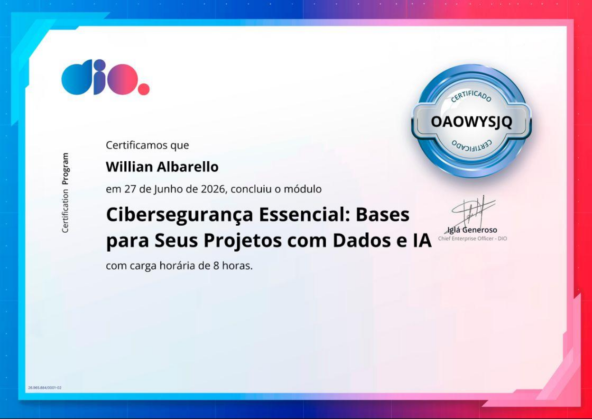
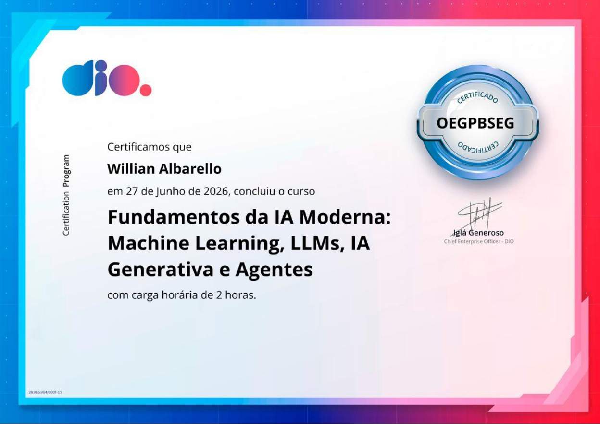
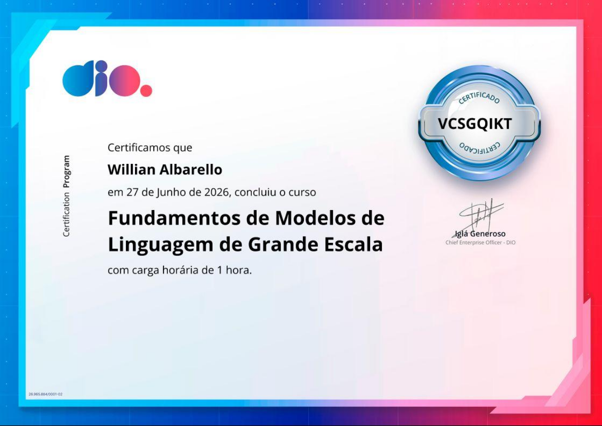
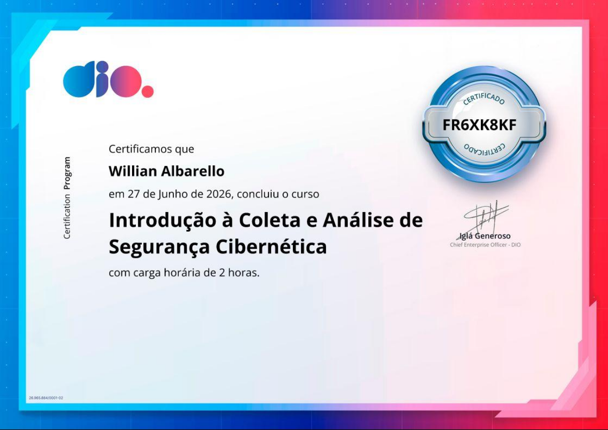
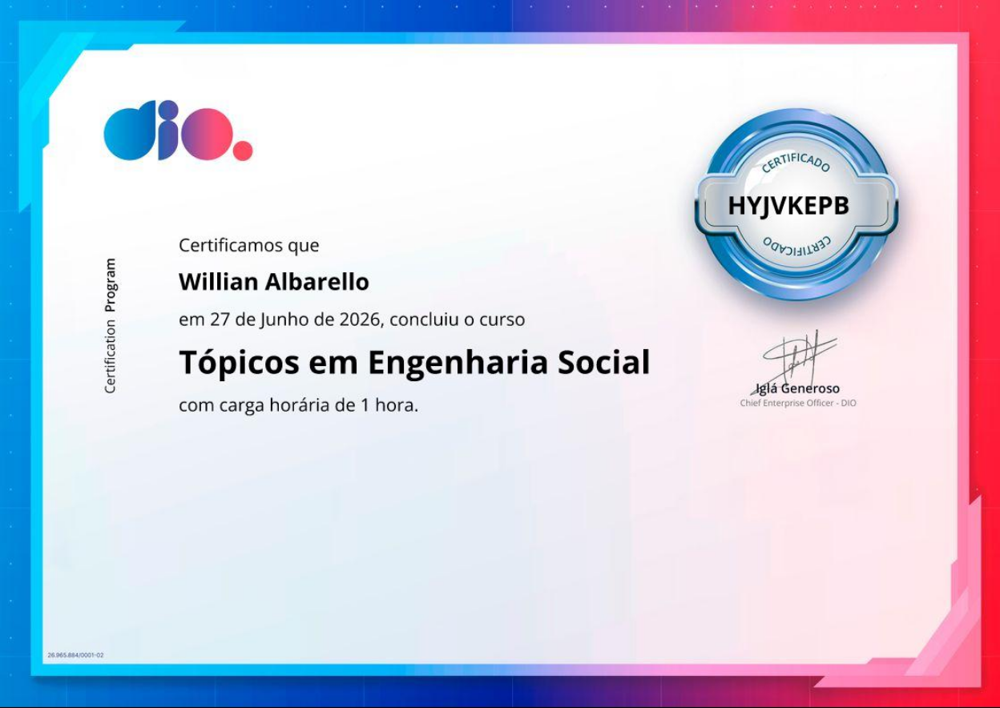
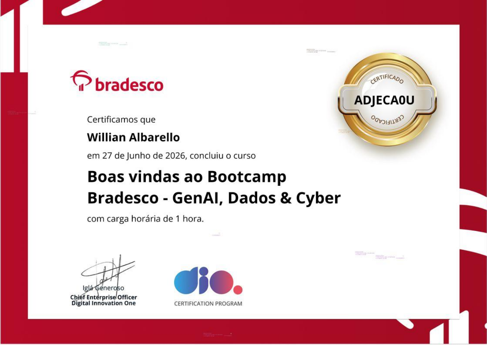

Portfólio — 2026
Willian
Albarello
Desenvolvedor de Sistemas · Estudante IFAC — Sistemas para Internet (1º período) · Estagiário T.I. @ FEM Cultura · Rio Branco, Acre
Construo sistemas com propósito — de apps Android de acessibilidade a ferramentas de transparência pública e plataformas educacionais. Autônomo, orientado a produto, foco em impacto real.

Projetos
Estudo · Engenharia Reversa ELF
Plataforma com 10 desafios práticos de reversing em ELF Linux 64-bit — do NOP patch a keygen com checksum CRC-8. Cada binário foi escrito do zero em C, com writeup completo em Markdown. Site em produção no Vercel.
Transparência Pública · Python
Monitor de contratos e licitações do Município de Rio Branco. Detecção de anomalias via IQR, alertas Telegram via n8n, scraping do Portal da Transparência Federal. DuckDB para análise local.
ETL Cívico · Dados Abertos
ETL que integra o Portal de Licitações do Acre (JSF/HTTP session) e a API REST do PNCP. FastAPI + PostgreSQL + Redis. Análise automatizada de editais públicos.
Acessibilidade · Dados Públicos
Plataforma voltada ao mapeamento e fomento da acessibilidade digital e física no Acre. Catalogação de dados abertos de inclusão e auditoria de conformidade (LBI/WCAG) em portais públicos.
Preservação Cultural · Linguística
VIVA — Vozes Indígenas Vivas do Acre
Projeto de conservação e digitalização de línguas indígenas acreanas em risco de extinção. Gravação, catalogação e acervo público de vocabulários, histórias e cantos de povos como Huni Kuĩ, Apurinã, Jaminawa e outros.
Game · C++ / raylib
Jogo multiplayer com modos KiteBall, Race e Territory (paper.io-style). Física de cauda de pipa via trail histórico + Catmull-Rom. DQN AI agent. Android + PC.
OSINT · Análise Comportamental
Coleta e análise de comentários públicos do Facebook via Selenium. Backend FastAPI, vitrine React/Next.js. Análise de padrões de discurso massivo.
Android · Game · Educação
O Grande Atlas (em dev)
RPG gamificado para aprendizado de matemática no Android. Jetpack Compose + StateFlow + missões em JSON. Estética dungeon, paleta gold/charcoal, conteúdo procedural.
Gestão · ERP
ERP focado em vendas, estoque e financeiro, com perfis de acesso separados para empresa e plataforma. Arquitetura modular focada em integridade e fluxos auditáveis.
Segurança · Automação
Scanner avançado de protocolos RTSP para identificação e monitoramento de câmeras IP. Ferramenta focada em análise de segurança de rede e automação.
Automação · API
Extração em massa de transcrições de vídeos do YouTube para processamento de dados, IA e análise de conteúdo massiva.
O que estou fazendo agora
T.I. @ FEM Cultura
Fundação de Cultura Elias Mansour · Museu dos Povos Acreanos, Rio Branco. Selecionado via Lidera Estágios em 2026. Suporte e desenvolvimento de soluções digitais no contexto cultural público do Acre.
IFAC — 1º Período
Sistemas para Internet · Campus Rio Branco · ingresso 2026. Cursando Álgebra Matricial e bases de desenvolvimento. Projetos práticos paralelos ao curso.
Fala Comigo
v0.3.x — Comunicação Aumentativa e Alternativa
Acre-Acessibilidade
Mapeamento de acessibilidade digital e fisica
Sentinela
Patches de auditoria em contratos publicos
Kite Game
Otimizacao Android + ShopUI
CrackLab — ELF Reversing
10 desafios publicados em crack-lab.vercel.app. NOP patch, patch de retorno, inverter jump, keygen com CRC-8, serial fishing. Foco em entender o código no nível do metal.
Tech & Skill Tree
Certificações
Especialização e aprendizado contínuo. Conclusão de trilhas de capacitação focadas em Cibersegurança, inteligência de dados e desenvolvimento ágil, incluindo o Bootcamp Bradesco - GenAI, Dados & Cyber pela DIO.

Cibersegurança Essencial: Bases para Seus Projetos com Dados e IA

Fundamentos da IA Moderna: Machine Learning, LLMs, IA Generativa e Agentes

Fundamentos de Modelos de Linguagem de Grande Escala (LLMs)
Princípios da Cibersegurança

Introdução à Coleta e Análise de Dados em Segurança Cibernética

Tópicos em Engenharia Social
Introdução ao DevSecOps
Conceitos e Práticas de Sistemas Operacionais e Máquinas Virtuais

Boas-vindas ao Bootcamp Bradesco - GenAI, Dados & Cyber
Certificação de Inglês — TOEFL ITP
Boas Práticas no Atendimento Público
Histórico
2026 — Presente
Estagiário T.I. — FEM Cultura
Fundação de Cultura Elias Mansour · Museu dos Povos Acreanos · Rio Branco, AC
Selecionado via Lidera Estágios. Suporte e desenvolvimento de soluções digitais no contexto cultural público do Acre. Primeiro emprego formal na área.
2026 — Presente
Sistemas para Internet — IFAC
Instituto Federal do Acre · Campus Rio Branco · 1º Período
Ingresso em 2026. Cursando bases de redes, desenvolvimento e álgebra matricial. Projetos práticos com aplicação institucional paralelos ao curso.
2026
Acre-Acessibilidade — Concepção
github.com/walbarellos/Acre-Acessibilidade · Dados Abertos · LBI
Idealizado após ingresso na FEM Cultura, focado em auditar e mapear a acessibilidade digital e física em órgãos e espaços públicos no Acre.
2026
Fala Comigo v0.3.0 — Produção
App Android de CAA · GPL-3.0 · VirusTotal 0/72
App de acessibilidade para comunicação de pessoas não-verbais. Parceiro no RJ fez fork para uso educacional. Submetido ao Programa Centelha (FAPEAC/FINEP).
2026
CrackLab — Plataforma de Reversing
crack-lab.vercel.app · 10 desafios ELF · C + Python
Plataforma de aprendizado de engenharia reversa com binários escritos do zero. Writeups detalhados com múltiplos caminhos de solução.
2024
Certificação de Inglês — TOEFL ITP
Nível B2 (Intermediário Superior)
Comprovação de fluência e proficiência em compreensão auditiva, estrutura e expressão escrita e leitura.
2023
Capacitação "Boas Práticas no Atendimento Público"
Diretoria de Organização em Centros de Atendimento — OCA
Treinamento focado em Linguagem Simples, Gestão da Qualidade, Posturas e Comportamento no diálogo com o cidadão e Gestão da Informação.
Anterior a 2026
Desenvolvedor Autônomo — Sistemas Institucionais
OCA · IAPEN · Polícia Civil do Acre
Entrega de sistemas reais para órgãos públicos do Acre como desenvolvedor solo. Requisitos institucionais, integridade de dados, sem suporte de equipe.
Contato
Aberto para colaborações em projetos de impacto real — acessibilidade, transparência pública, educação, cultura indígena. Prefiro comunicação direta.
a coragem para mudar o que posso
e a sabedoria para distinguir ambos.